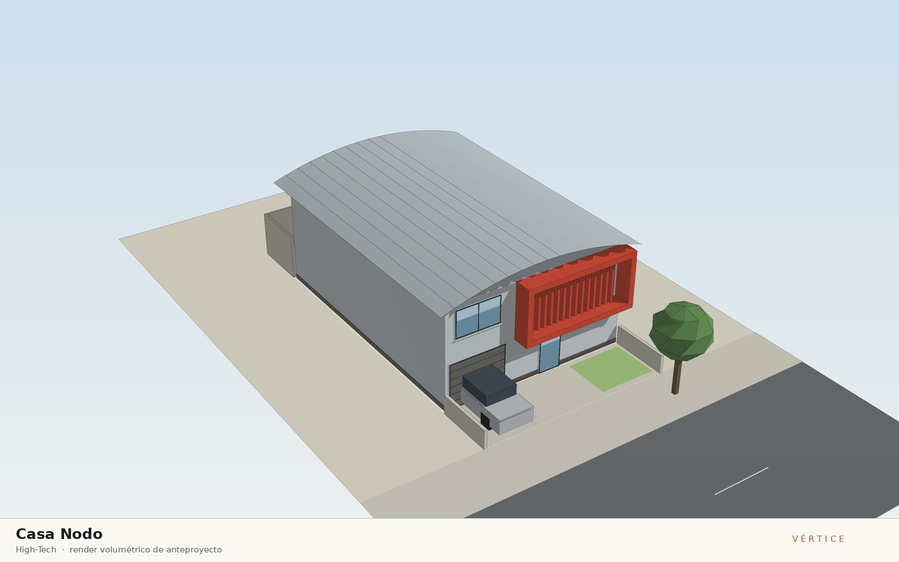
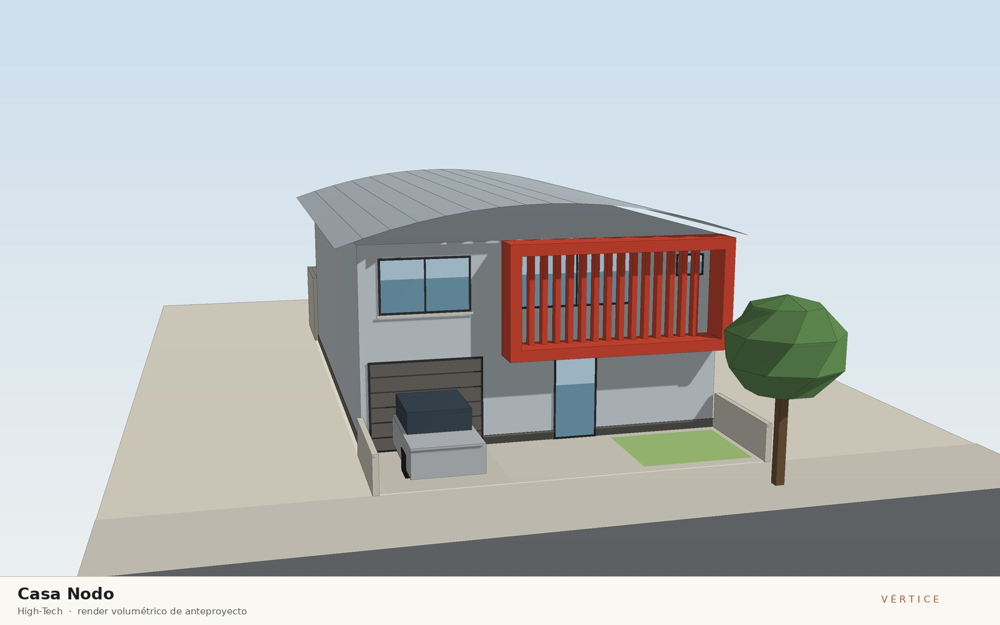
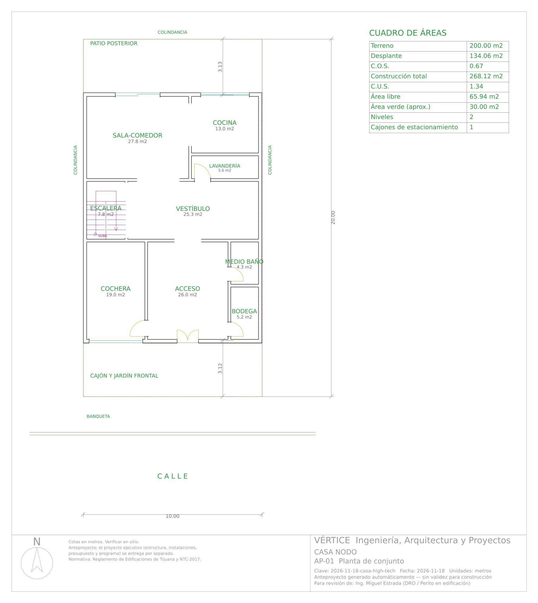
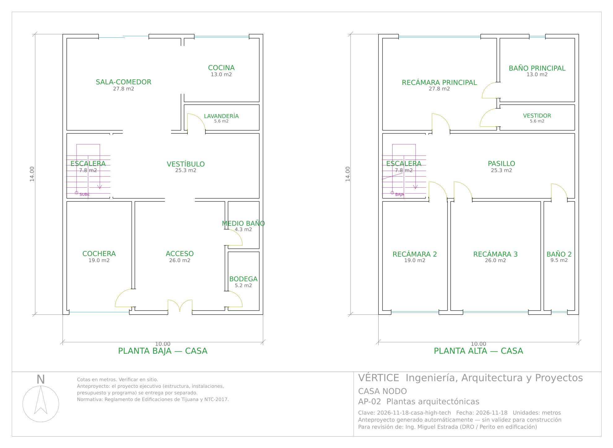
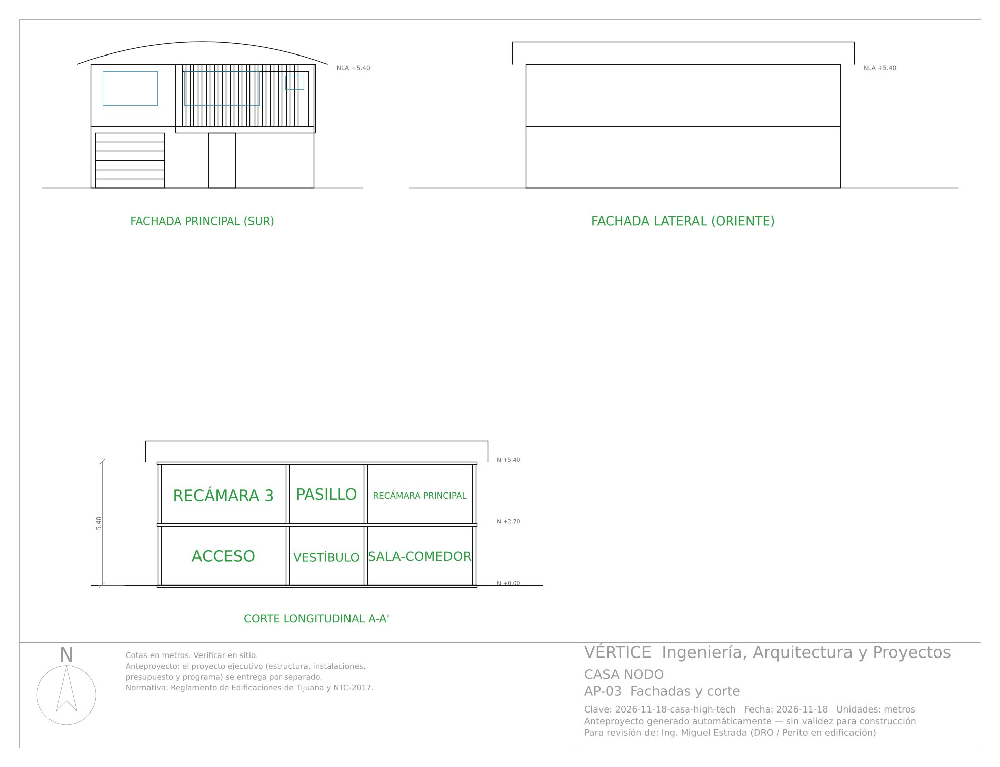

18 de noviembre de 2026 · Casa habitación
Casa Nodo
Corriente: High-Tech

Concepto
Vivienda High-Tech en un lote de 10 x 20 m que muestra cómo está hecha: un marco de acero rojo señal se despega 90 cm de la fachada sur y enmarca la planta alta, y dentro de él una batería de parteluces verticales de aluminio extruido filtra el sol del sur sobre la recámara 3 sin quitarle vista a la calle. Las colindancias oriente y poniente quedan ciegas, con aplanado e impermeabilizante, y cierran la casa al asoleamiento del poniente; las fachadas sur y norte se forran de paneles de aluminio compuesto gris claro. La cubierta curva de lámina engargolada, una bóveda rebajada sobre el lado corto, desaloja rápido la lluvia de invierno hacia canalones laterales y deja una cámara ventilada sobre la losa de azotea que aísla del calor; el agua se almacena en cisterna con hidroneumático y el gas en el traspatio, sin equipos a la vista en la cubierta. Hacia el norte, la sala-comedor se abre al traspatio con un cancel corredizo de piso a techo, que junto con las ventanas del sur da ventilación cruzada con la brisa marina.
Dictamen del arquitecto
- Terreno de 10.00 x 20.00 m (200 m²); casa de 9.75 x 13.75 m a ejes en 2 niveles, 268.1 m² construidos con desplante de 134.1 m²: COS 0.67 y CUS 1.34 (por verificar con el PDU de Tijuana). Muros oriente y poniente ciegos sobre colindancia (aplanado, sellador e impermeabilizante), restricción frontal de 3.00 m con cochera de 1 cajón (3.40 x 5.60 m, portón seccional de 3.00 m) y traspatio al norte con el tanque de gas LP.
- Lenguaje High-Tech: marco volumétrico de acero de 30 x 90 cm en rojo señal que se despega 0.90 m del paño sur y enmarca la planta alta; dentro, 15 parteluces verticales de aluminio extruido de 15 x 25 cm filtran el sol del sur sobre la recámara 3 y el baño 2 sin tapar la ventana de la recámara 2. Bóveda rebajada de lámina engargolada (flecha 0.98 m, alero 0.60 m) sobre arcos de PTR con cámara ventilada sobre la losa. Se descartaron estructura_aparente (el motor no la dibuja en mampostería: unas columnas de acero falsas serían decorado) y muro_cortina (la sala-comedor ya abre al norte con cancel corredizo de 2.50 m de piso a cerramiento y no hay ventanas de locales habitables en planta baja).
- Recorrido: acceso por puerta doble de 1.20 m (26.0 m²) con paso a cochera, bodega (5.2 m²) y medio baño (4.3 m², sin ventana: extractor obligatorio) → vestíbulo (25.3 m²) con escalera en U y lavandería (5.6 m²) → sala-comedor (27.8 m², 4.75 x 5.85 m) comunicada con la cocina (13.0 m²) y con salida al traspatio. Escalera de 1.15 m de ancho, peralte 16.9 cm, huella 30.2 cm (2p + h = 64 cm).
- Planta alta: pasillo (25.3 m²) que reparte a recámara principal (27.8 m²) con baño (13.0 m²) y vestidor (5.6 m²) al norte, recámaras 2 (19.0 m²) y 3 (26.0 m²) con clóset y baño 2 (9.5 m², con ventila) al sur. Todas las recámaras ≥ 2.70 m de lado con ventana al exterior; altura libre 2.56 m en planta baja y 2.57 m en planta alta (≥ 2.30 m).
- Cédula de acabados según la corriente: concreto pulido sellado en planta baja (también huella y peralte de la escalera), piso de ingeniería de encino en planta alta, porcelanato antiderrapante en baños, cerámico en lavandería y concreto escobillado en cochera; 243.8 m² de piso iguales en planos y presupuesto.
- Motor: (1) la cláusula "piso de concreto pulido … en planta baja, porcelanato gris en baños y piso de ingeniería …" ponía "concreto pulido sellado, porcelanato gris en baños" en todos los locales secos, escalera en porcelanato y el presupuesto cotizaba porcelanato; ahora se quita el recubrimiento de baños aunque vaya entre comas y se respeta el piso de cada nivel (sin cambios en los 17 proyectos anteriores). (2) Parteluces y marco se presupuestaban siempre de concreto armado aunque el spec los pidiera de aluminio o acero; ahora toman el material del spec. (3) En AP-03 el nivel de azotea decía "NPT" y se encimaba con la bóveda; ahora es "NLA" fuera del paño.
Dictamen de ingeniería
- Veredicto: construible conforme a norma — 0 errores y 0 avisos en las 29 verificaciones de coordinación; todos los muros apoyados en continuidad vertical, castillos fuera de vanos y sin ajustes del ciclo de coordinación (muros de 15 cm en ambas direcciones), sujeto a los supuestos indicados abajo.
- Mampostería confinada (Q = 1.5): castillos K-1 15x20 (43 en planta baja y 43 en planta alta), dalas de desplante, cerramiento y remate, y 10 cerramientos T-1 a T-10 de 15x30 a 20x35 cm (T-1 20x30 con 2 #6, L = 2.55 m, Mu 4.47 t·m; T-10 20x35 con 2 #6, L = 4.24 m). Método simplificado NTC: X VR 68.4 t ≥ Vu 58.8 t (margen 16 %); Y VR 89.2 t ≥ 58.8 t. V basal 53.4 t con c = 0.213 supuesto y T = 0.17 s; muro más cargado X = 5.97 a 8,950 de 12,600 kg/m (71 %). El marco de acero y los parteluces son elementos ligeros anclados a losas y castillos: su conexión se detalla con el proveedor.
- Losas macizas de 14 cm en entrepiso (≥ 13.7 cm) y 13 cm en azotea (≥ 12.7 cm) con #3 @ 10–20 cm; la bóveda de lámina (30 kg/m²) está incluida en la carga muerta de azotea. Zapatas corridas h = 20 cm, B = 50 cm, #4 @ 33: ZC-1 perimetral (q = 5.26 t/m², excéntrica en los linderos oriente y poniente) y ZC-2 interior (q = 9.00 t/m², 75 % de la capacidad) contra una q adm supuesta de 12 t/m² a -0.80 m: requiere estudio de mecánica de suelos y confirmar el espectro sísmico del sitio. Cuantificación: 5,727 kg de acero (21.4 kg/m²) y 63.5 m³ de concreto.
- Instalaciones: 4 ocupantes, 0.6 m³/día, 22 UM (1.21 L/s), toma Ø13 mm, alimentación Ø25 mm, cisterna de 2 m³ con hidroneumático; 25 UD, bajadas del baño principal (a cocina) y del baño 2 (a bodega) junto a muro, colector Ø100 mm PVC al 2 % a la red CESPT con ventilación Ø50 mm; gasto pluvial 4.5 L/s a 2 bajadas Ø100 mm desde canalón perimetral, separadas del sanitario; 13 circuitos (12,918 W instalados, 9,043 W de demanda, 45.7 A), interruptor general 2P-60 A, desbalance 0.3 %; gas LP con tanque estacionario de 300 L en el traspatio a nivel de piso, ventilado y a más de 3 m de flamas, red de cobre tipo L. Factibilidades de CESPT y CFE por tramitar.
- Presupuesto de $1,532,345 + IVA ($1,654,932 con IVA fronterizo; $5,715/m²) y programa de 18 semanas (104 días hábiles); marco de acero (18.2 ml), parteluces de aluminio (15 pza), bóveda de lámina (167.2 m²), cancelería, pisos y cocina integral quedan entre las 37 partidas de la hoja "Por cotizar" hasta tener cotización de proveedores de Tijuana.
Materiales
Muros de block de concreto con recubrimiento de paneles de aluminio compuesto gris claro en fachadas sur y norte; marco volumétrico de perfiles de acero estructural con pintura epóxica color rojo señal; parteluces verticales de aluminio extruido anodizado; cubierta curva de lámina engargolada de acero galvanizado prepintado; cancelería de aluminio anodizado natural con vidrio doble bajo emisivo; barandal de escalera de acero inoxidable y vidrio templado; piso de concreto pulido sellado en planta baja, porcelanato gris antiderrapante en baños y piso de ingeniería de madera de encino en planta alta
Vistas

Anteproyecto — descargas
Láminas del anteproyecto






Proyecto ejecutivo
Proyecto ejecutivo completo — 17 láminas. Se entrega por separado; no se publica en esta galería.
Revisión de coordinación arquitectura–estructura–instalaciones–acabados y normativa: Sin errores · 0 avisos en 29 verificaciones.
Arquitectónico
- A-01 Planta de conjunto
- A-02 Plantas arquitectónicas amuebladas
- A-03 Plantas acotadas a ejes
- A-04 Planta de azotea
- A-05 Fachadas
- A-06 Cortes arquitectónicos
- A-07 Cancelería y acabados
Estructural
- E-01 Planta de cimentación
- E-02 Losas, trabes y castillos
- E-03 Detalles estructurales
- E-04 Cuantificación de acero y concreto
Instalaciones
- IH-01 Instalación hidráulica
- IS-01 Instalación sanitaria y pluvial
- IE-01 Instalación eléctrica
- IG-01 Instalación de gas LP
- IH-02 Isométrico hidráulico
- IE-02 Cuadro de cargas y diagrama unifilar
Incluye: Memoria técnica (Word/PDF) · Presupuesto (Excel) · Programa de obra (Excel y Gantt) · Juego de planos (PDF y DXF)
Revisión de calidad
Sin errores · 1 avisos
| Tipo | Nivel | Observación |
|---|---|---|
| Aviso | Casa · Planta baja | Medio baño: ventilación mecánica (extractor) obligatoria. |
Cuadro de áreas
Ver los 17 espacios
| Bloque | Nivel | Espacio | Medidas (m) | Área (m²) |
|---|---|---|---|---|
| Casa | Planta baja | Cochera | 3.40 x 5.60 | 19.04 |
| Casa | Planta baja | Acceso | 4.65 x 5.60 | 26.04 |
| Casa | Planta baja | Bodega | 1.70 x 3.08 | 5.24 |
| Casa | Planta baja | Medio baño | 1.70 x 2.52 | 4.28 |
| Casa | Planta baja | Escalera | 2.30 x 3.40 | 7.82 |
| Casa | Planta baja | Vestíbulo | 7.45 x 3.40 | 25.33 |
| Casa | Planta baja | Sala-comedor | 5.85 x 4.75 | 27.79 |
| Casa | Planta baja | Lavandería | 3.90 x 1.43 | 5.56 |
| Casa | Planta baja | Cocina | 3.90 x 3.33 | 12.97 |
| Casa | Planta alta | Recámara 2 | 3.40 x 5.60 | 19.04 |
| Casa | Planta alta | Recámara 3 | 4.65 x 5.60 | 26.04 |
| Casa | Planta alta | Baño 2 | 1.70 x 5.60 | 9.52 |
| Casa | Planta alta | Escalera | 2.30 x 3.40 | 7.82 |
| Casa | Planta alta | Pasillo | 7.45 x 3.40 | 25.33 |
| Casa | Planta alta | Recámara principal | 5.85 x 4.75 | 27.79 |
| Casa | Planta alta | Vestidor | 3.90 x 1.43 | 5.56 |
| Casa | Planta alta | Baño principal | 3.90 x 3.33 | 12.97 |
Anteproyecto conceptual generado por el motor Vértice. El predimensionamiento estructural y los cálculos de instalaciones son preliminares y no sustituyen la memoria de cálculo definitiva, el estudio de mecánica de suelos ni la revisión y firma del DRO y corresponsables.